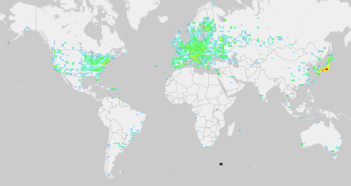
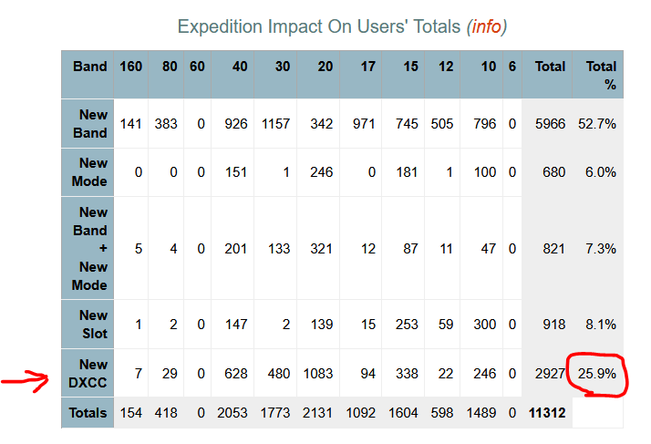

_______________________________________________Lest anyone think that I was whining, I'm not; I don't often throw stones, but I do (always) try to hope for better (more). I also watch patterns because they're predictive too.
I'm grateful that Yuris accomplished what others failed to do, get on the island to operate and for the ATNO (times 7, not awful for the lousy prop in the PNW and considering it's near antipodal [800 miles off], path was a constant issue, it varied A LOT).
I am somewhat disappointed that he didn't turn to the west coast during the narrow windows for the high bands. Not my call, I'm not on site and MANY ops, don't even try. Yuris DID try, when he was actually in the chair. I'm ALSO sure other zones feel exactly the SAME way.
Let's look at the stats https://clublog.org/charts/?c=ZS8W#r

The mid-west, almost empty; east coast saturated. I'd put money that the mid-west was low band (40M only).

One QUARTER of the callers, got ATNO; higher than almost any other team lately (which have higher numbers, which skews the percentage some).
Now, where it could have been improved (was he aware or care?):
This clearly shows that he worked what he heard and the robot heard primarily EU/AS; meaning when he was actually doing the operating (in addition to the chores he signed on to accomplish); THAT was the time he worked more other zones (like NA, specifically west coast). The robot was an i-i-i-i-i-diot-t-t-t-t FAR too many times (as the window, closed).
Not recognizing that the east coast vs west coast prop isn't the same (ditto China, Russia, even Australia; all large spaces, many time zones apart) seems to be a common lack in the DX teams. (Treat it as microclimates for weather? One forecast size will NOT fit all).
And we also don't know the goals for Yuris but can presume; ATNO (yes), sheer numbers as fast as possible (yes), equal zone treatment (nope, not enough chair time) and seeking out the pop gun stations (nope, the blast from EU never ended and consumed the bandwidth, it would be impossible) and use the narrow windows of time (without previous knowledge from the site or much hard data to draw on in real time, other than EU never shut off); again no.
While it's not common for NA to take third in the ranking; considering a one man operation and location; he did what he could and provided a good number of ATNO (and slots). Kudos!
Could he have done better? Maybe, but he didn't have a pilot, a posted band plan or the usual 'stuff'; it was a ONE MAN operation, ENTIRELY, start to finish. And HE required downtime (sleep) as well.
I'd give him a B+, good but room for some improvement (as ALL DX ops are, only a few are A+ level, and they're NOT rare places).
Livestream would have saved a LOT of wasted calling watts in that it shows what HE hears, not how well he hears us (which he DID much of the time). But conditions (internet) didn't allow it or much (if any) contact with those who would request or guide him for prop.
But calling to break the walls (us spending watts) so the DX knows the path is possible, is part of the game (and he didn't tell the robot to filter by distance or zone, he did that only when he sat in the chair and saw/heard).
B+ is not bad, for one op. Some teams of late, barely make C. Plus he did what others failed to do; GET THERE. And quick OQRS, bonus points! (Yep, I paid the bounty and a small donation for a job done well.)
73,
Rick nk7i
On 5/16/2025 10:10 AM, CHris Tate via Chat wrote:
Greetings NCDXC peeps!
A little catch up.. I have been quite busy the last 2 or so years so have not been active in the NCDXC during that time but now that some of my amateur radio obligations are thinning out(a little bit) again, I am swinging a little more emphasis on my DXing pursuits and NCDXC..
the giving back part.. <snip>
Chat mailing list
Chat@ncdxc.org
http://mail.ncdxc.org/mailman/listinfo/chat_ncdxc.org